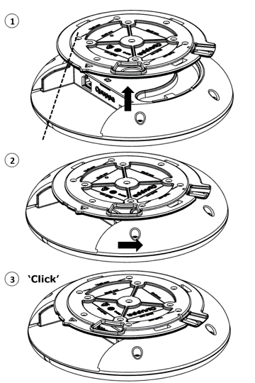

Q17 Locator 사용 방법
이 섹션에서는 Q17 Locator 설치 방법, 전원 및 네트워크 연결 방법, 공장 출하 시 설정으로 초기화하는 방법을 설명합니다.
설치
Quuppa Q17은 일체의 금속 장애물(예: 에어컨 배관, 대형 천장 트러스, 건물 상부 구조물)이 없는 곳으로, 인클로저 측면이나 전면에 장착해야 합니다. 필요한 경우, 단단한 파이프를 사용해 Quuppa Q17을 아래로 내려 이러한 장애물로부터 거리를 두도록 합니다.
- 장착 브래킷을 천장에 설치
설치 시 장착 브래킷을 가장 먼저 설치해야 합니다. 장착 브래킷에는 장착 나사용 구멍이 여러 개 있습니다. 안정적인 설치를 위해서는 나사를 최소 4 개 이상 사용 해야 합니다. 권장 패턴은 VESA 표준 75mm x 50mm 또는 50mm x 50mm이며, 두 가지 모두 장착 브래킷에 표시되어 있습니다.
케이블 배선을 숨길 필요가 있는 경우 이더넷 케이블을 브래킷의 케이블 통로로 통과시켜 연결할 수 있습니다.장착 브래킷에 있는 방향 표시와 방향 가이드라인을 사용해 Quuppa Q17을 해당 환경에 정의된 방향에 맞게 정렬할 수 있습니다.
CAUTION: 장착 브래킷을 절대 뜨거운 표면에 부착, 장착 또는 연결하지 마십시오. 설치 전에 항상 표면이 장비 무게를 수용할 수 있는지 확인하십시오.일반 안전 규정을 준수하지 않을 경우 물체 손상 또는 부상이 발생할 수 있습니다. Quuppa Q17 장치 설치는 반드시 자격을 갖춘 전문 기술자에게 의뢰하십시오.
- Quuppa Q17 메인 장치를 장착 브래킷에 설치

- 이더넷 케이블과 Micro USB 케이블(사용하는 경우)을 연결합니다.
- 커넥터 영역을 먼지와 이물질로부터 보호하기 위해 커넥터 커버를 사용할 수 있습니다.
- 장착 브래킷의 설치 가이드가 Quuppa Q17 메인 장치(1)의 표시등과 일치하도록 Quuppa Q17 메인 장치를 브래킷에 맞춰 정렬합니다.
- Quuppa Q17 메인 장치를 들어올려 브래킷이 브래킷 장착 채널(1)로 들어가도록 합니다.
- ‘딸깍’(3)소리가 날 때까지 Quuppa Q17 메인 장치(2)를 돌립니다.
전원 공급 장치에 연결
옵션 1: PoE(이더넷 전원 장치) 사용
Quuppa Q17은 표준 IEEE 802.3at 타입 1 PoE 구성 요소 사용을 지원합니다(예: 전원 공급 장치로서의 PoE 스위치 또는 전원 인젝터). 반드시 표준 인증 PoE 장치를 사용하십시오. PoE 사용 시 별도의 DC 전원 공급 장치는 필요 없습니다.
옵션 2: 별도의 5V DC Micro USB 사용
PoE 구성 요소를 사용 하지 않는 경우 Micro USB를 사용해 Quuppa Q17을 5V 전원 공급 장치에 연결하십시오. 반드시 호환되는 전원 공급 장치를 사용하십시오. 호환되는 전원 공급 장치에 대해 궁금한 사항이 있으시면 Quuppa에 문의해 주십시오.
전원이 연결되면 Quuppa Q17이 자동으로 켜집니다. 적색 표시등이 여러 차례 깜박인 후 적색 표시등이 켜지고, 이후 Quuppa Q17이 Quuppa Positioning Engine에 연결될 때까지 계속 켜져 있게 됩니다.
네트워크에 연결
RJ-45 이더넷 소켓을 사용해 이더넷 케이블로 Quuppa Q17을 네트워크에 연결합니다. Quuppa Q17 장치에는 차폐 형 또는 비차폐 이더넷 케이블을 사용할 수 있습니다. 사용자의 안전을 지키고 Quuppa Q17의 손상을 방지하려면 Quuppa Q17은 반드시 표준 인증 네트워크 구성 요소에 연결해야 합니다.
적색 표시등이 천천히 깜박일 때 는 Quuppa Q17 이 네트워크에 올바로 연결이 되어 있지만 Quuppa Positioning Engine 소프트웨어에 의해 활성화 되지 않은 상태를 나타냅니다. 청색 표시등은 Quuppa Q17이 Quuppa Positioning Engine 소프트웨어에 의해 활성화되면 깜박이거나 계속 켜져 있게 됩니다.
공장 출하 시 설정으로 초기화
Locator를 공장 출하 시 설정으로 초기화하려면 Locator가 전원에 연결되어 있는 상태에서 작은 핀을 사용해 초기화 버튼을 꾹 눌러줍니다. 표시등이 녹색으로 바뀌더라도 계속 초기화 버튼을 누르고 있다가 표시등이 적색으로 바뀌면 버튼을 놓습니다. 초기화 버튼을 놓으면 Locator가 재부팅됩니다. 재부팅 과정에서는 표시등이 적색, 녹색, 청색으로 차례대로 한 번씩 깜박입니다.